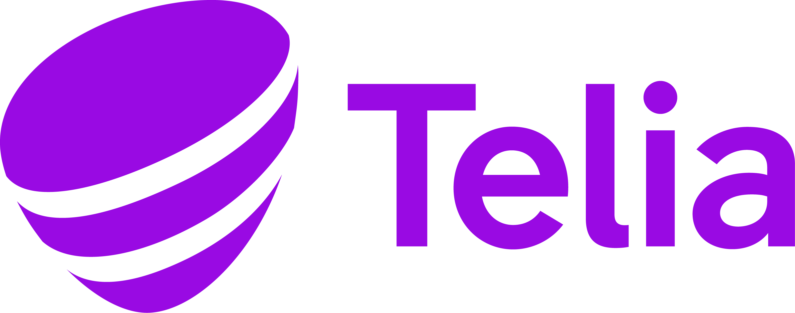

A future-facing vision of where 5G Standalone is heading — programmable, cognitive, ambient — with interactive network-slicing and architecture simulations built in.
Animated sections: three waves of transformation, AI-native networks, ambient sensing, NTN, new business models, and the trillion-dollar shift.
Watch slices, radio resource partitions and 5QI flows move in real time, with L4S congestion control inside the Private RRP.
Explore how RRPs, S-NSSAI slices, 5QIs and DNNs relate inside the 5G Standalone core.
The decade of milestones across spectrum, slicing, AI, positioning and NTN — tap a year to explore what ships when.
The standardization timeline from 5G-Advanced Phase 2 to the first 6G specifications and ITU IMT-2030.

×